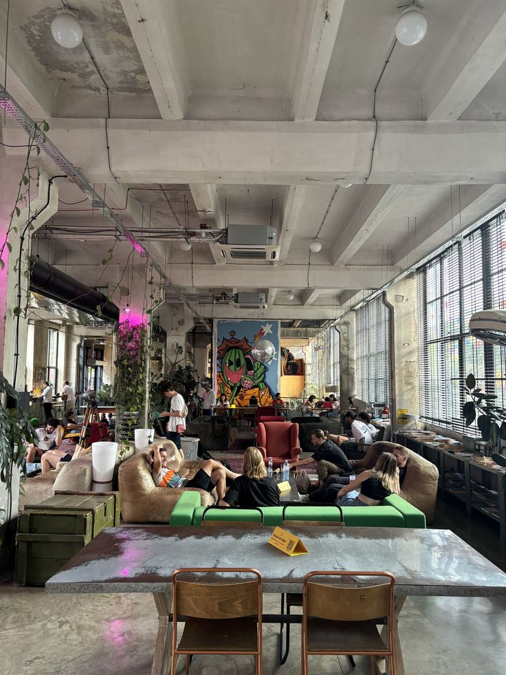
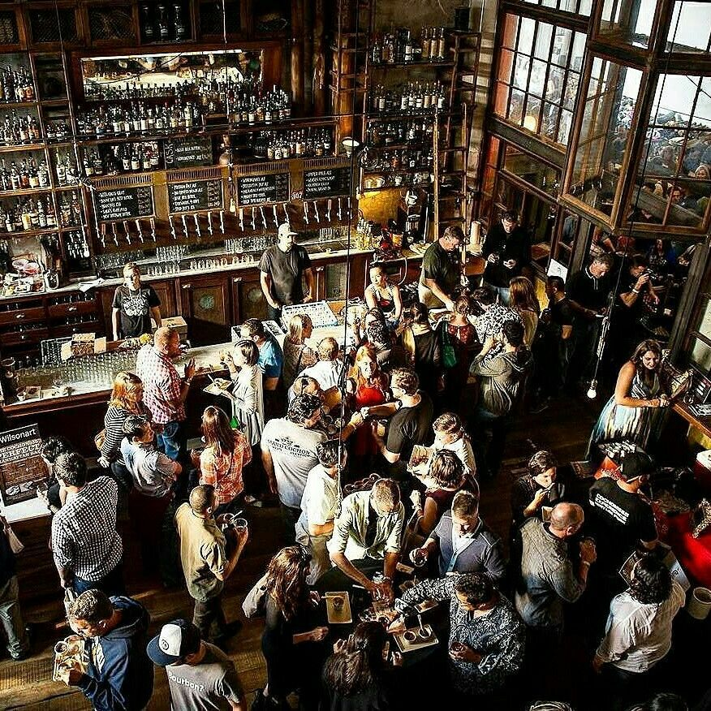
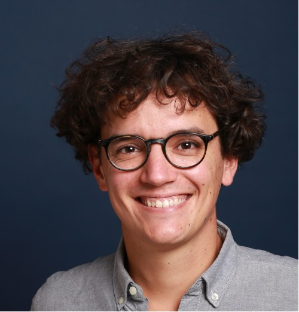

Conférences en petit comité · Bar & Networking
The Curious Crowd est une série de conférences en petit comité, organisées dans des bars et hôtels, où des experts partagent leur savoir sur une thématique précise, dans un cadre convivial et interactif.
Nous croyons que la curiosité casse la routine et nourrit la réflexion. Il existe un vrai désir de formats intelligents, accessibles et non digitaux. Les meilleures idées naissent souvent autour d'un verre, entre personnes ouvertes d'esprit.
Ce format a déjà fait ses preuves aux États-Unis avec des initiatives comme Lectures on Tap. Nous l'avons nous-mêmes testé avec succès lors de plusieurs soirées privées organisées avec une vingtaine de participants.

CSP+, 30–40 ans, curieuse et engagée.
Jauge de 20 à 40 personnes par soirée.
Une première boisson incluse, une seconde proposée en fin de talk.
environ 1 soir par mois
mardi ou mercredi soir

Accueil des participants & commandes
Ouverture de la soirée — mot de Robin Carel
Conférence (45 min) + échanges avec le conférencier (20 min)
Verres, networking & discussions informelles
Jeunes cadres parisiens, CSP+, 30–40 ans — sur un créneau de faible affluence.
Minimum une consommation par client, et une dynamique qui incite à rester pour un second verre.
Positionnement premium et culturel au sein d'une communauté fidèle et engagée.
Nous gérons tout : intervenants, préparation éditoriale, animation et communication.

Ancien journaliste chez LCI et BFM, fondateur du média L'Informateur. Passionné d'investigation et de politique. Anime et prépare le contenu éditorial de chaque soirée.
Cofondateur d'un cabinet de conseil en finance. Fils de mécanicien, passionné d'automobile et d'actualité économique. Recrute et anime notre communauté d'intervenants.
VP Sales dans la tech. Fils de paysan, passionné d'agriculture et de lecture. Pilote la stratégie commerciale et les partenariats.